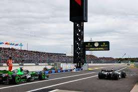
TL1: Ajustes iniciais do carro, pneus e pista.
TL2: Mais dados sobre estratégia e desempenho.
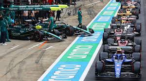
TL3: Últimos ajustes antes do qualy.
Qualifying: Sistema eliminatorio onde os 5 ultimos são eliminados dividos em Q1, Q2 e Q3 definem a ordem de largada da corrida.
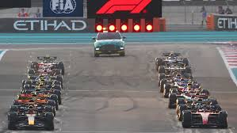
Corrida de 305 km (ou 2h). Gestão de pneus e pit-stops estratégicos.
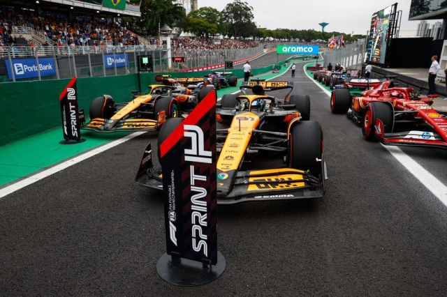
Sexta: Treino Livre + Classificação Sprint. Corrida: Corrida Sprint : Os pneus da Formula 1 são fabricados pela empresa automobilista da Pirelli,eles são dividos em 6 compostos sendo eles (C1,C2,C3,C4,C5 e C6),sendo dividos em 3 compostos por final de semana sendo nomiados de pneus slicks, Sendo eles :Macio(soft),Medio(medium),Duro(hard).Alem dos slicks tambem existem os compostos de pista molhadas sendo eles os pneus Intermediarios e o pneu Wet.
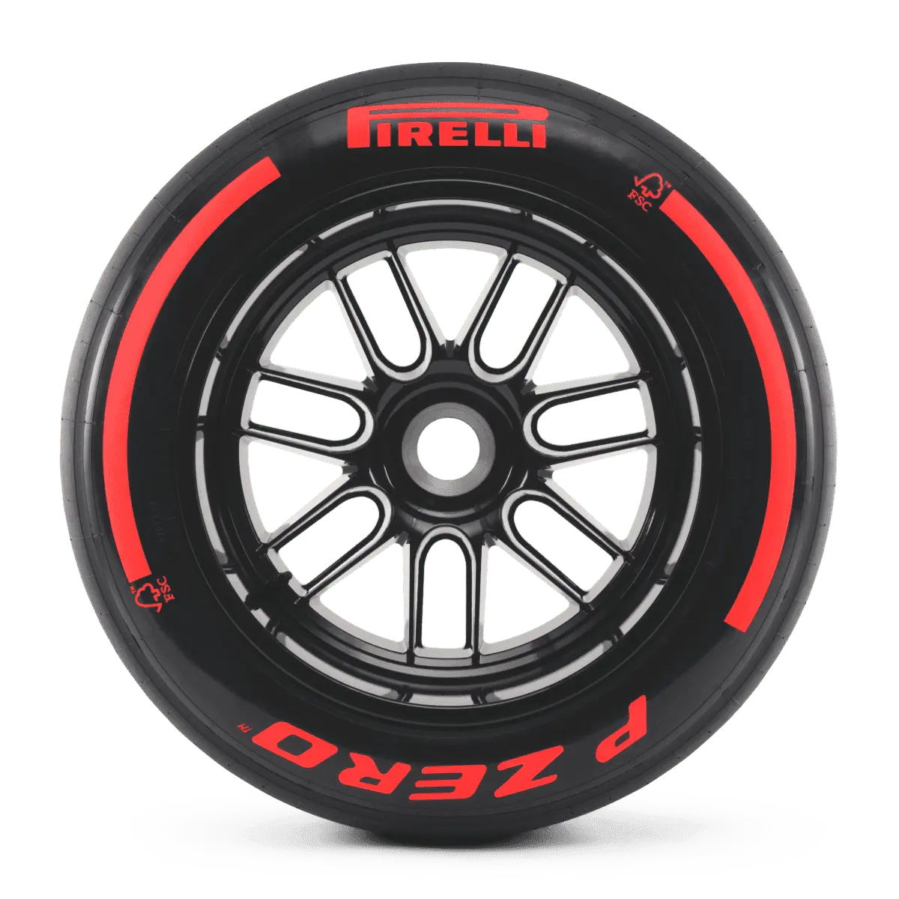 Oferece maior aderência e velocidade, mas se desgasta mais rápido. 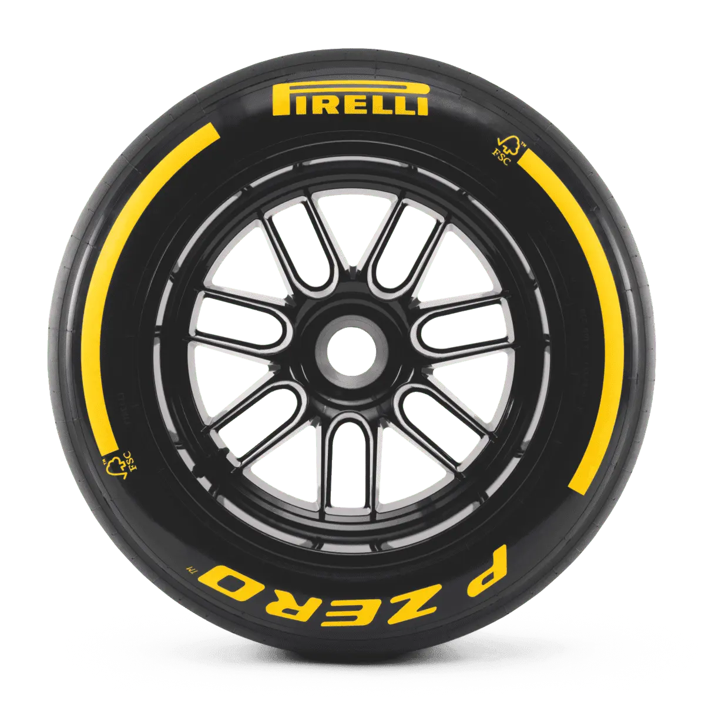 Equilíbrio entre desempenho e durabilidade. 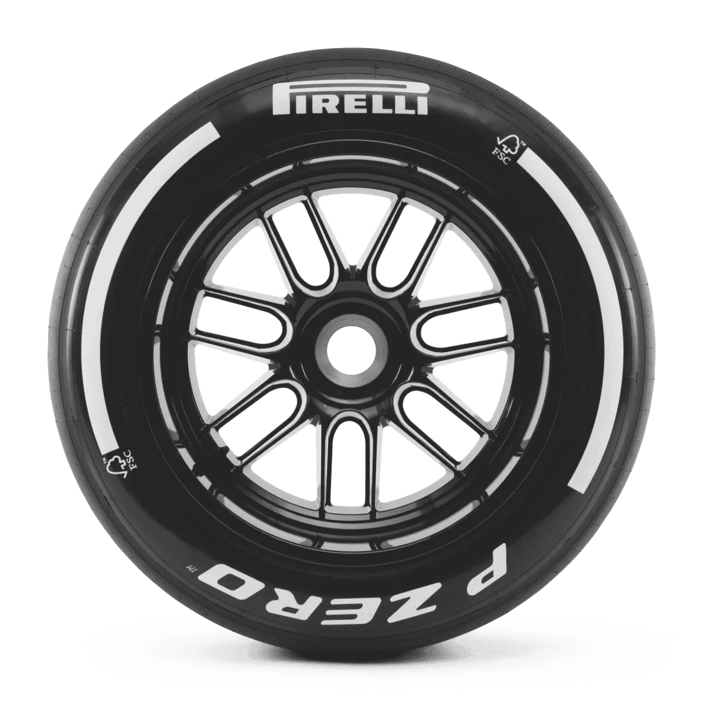 Menor desgaste, ideal para stints longos. 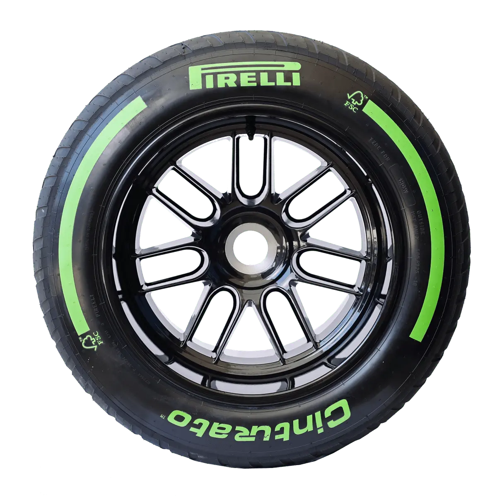 Usado em pista úmida ou chuva leve. 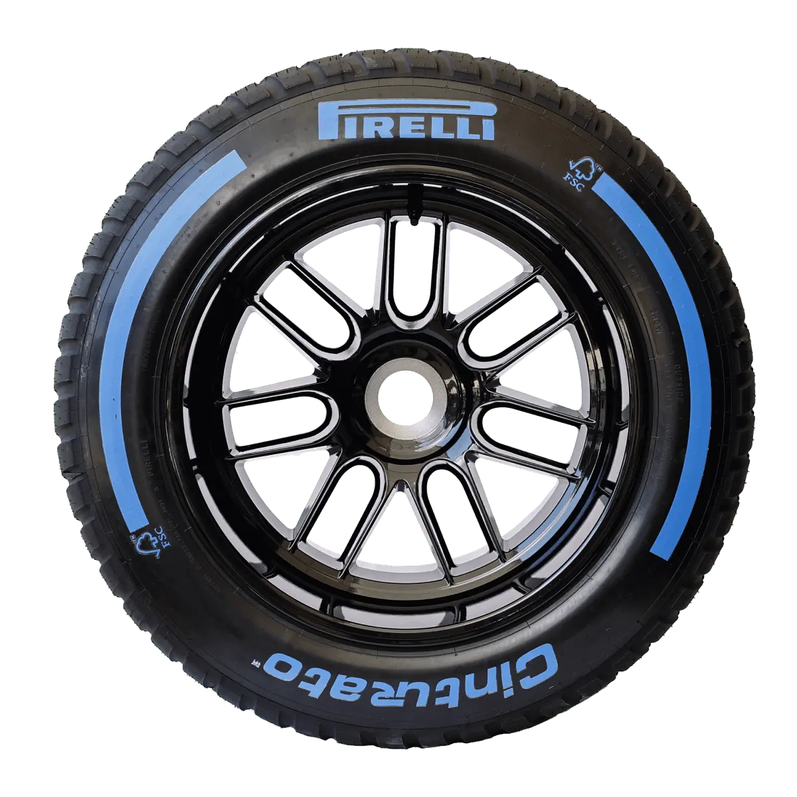 Possui sulcos profundos para escoar grande volume de água.
Sábado: Sprint (corrida curta).
Domingo: Corrida
🏁 Pontuação – Fim de Semana Normal
⚡ Pontuação – Sprint
Tipos de Pneus
🔴 Macio (Soft)
🟡 Médio (Medium)
⚪ Duro (Hard)
🟢 Intermediário
🔵 Chuva Extrema (Wet)
| Round | GP | Pista | País | Local | Data | Horário BR |
|---|---|---|---|---|---|---|
| 1 | GP da Australia | Circuito de Albert Park | Australia | Melbourne | 06-08/03/2026 | 01:00 |
| 2 | GP da China | Circuito de Xangai | China | Shanghai | 13-15/03/2026 | 04:00 |
| 3 | GP do Japão | Circuito de Suzuka | Japão | Suzuka | 27-29/03/2026 | 02:00 |
| 4 | GP Bahrein | Circuito do Bahrein | Bahrein | Sakhir | 10-12/04/2026 | 10:00 | 5 | GP da Arábia Saudita | Circuito Corniche de Gidé | Arábia Saudita | Jeddah | 17-19/04/2026 | 10:00 |
| 6 | GP de Miami | Autromodo de MIami | EUA | Miami | 01-03/05/2026 | 17:00 |
| 7 | GP do Canada | Circuito Gilles Villeneuve | Canada | Montreal | 22-24/05/2026 | 15:00 |
| 8 | GP de Monaco | Circuito de Monaco | Monaco | Monaco | 05-07/06/2026 | 10:00 |
| 9 | GP da Espanha | Circuito de Barcelona-Catalunha | Espanha | Barcelona | 12-14/06/2026 | 10:00 |
| 10 | GP da Austria | Red bull Ring | Austria | Spilberg | 26-28/06/2026 | 10:00 |
| 11 | GP da Grã-Bretanha | Circuito de Silverstone | Inglaterra | Silverstone | 03-05/07/2026 | 10:00 |
| 12 | GP da Belgica | Circuito de SPA-Francoshamps | Belgica | Ardenas | 17-19/07/2026 | 10:00 |
| 13 | GP da Hungria | Hugaroring | Hungria | Budapest | 24-26/07/2026 | 10:00 |
| 14 | GP da Holanda | Circuito de Zandvoort | Paises Baixos | Zandvoort | 21-23/08/2026 | 10:00 |
| 15 | GP da Italia | Autromodo de Monza | Italia | Monza | 04-06/09/2026 | 10:00 |
| 16 | GP da Espanha | Circuito de Madrid | Espanha | Madrid | 11-13/09/2026 | 10:00 |
| 17 | GP do Azerbaijão | Circuito de Baku | Azerbaijão | Baku | 24-26/10/2026 | 08:00 |
| 18 | GP de Singapura | Circuito de Marina Bay | Singapura | Marina Bay | 09-11/10/2026 | 09:00 |
| 19 | GP dos Estados Unidos | Circuito das Américas | EUA | Austin | 23-25/10/2026 | 16:00 |
| 20 | GP do Mexico | Autodromo Hermanos Rodriguez | Mexico | Mexico City | 30-01/11/2026 | 17:00 |
| 21 | GP de São Paulo | Autodromo de Interlagos | Brasil | Interlagos | 06-08/11/2026 | 14:00 |
| 22 | GP de Las Vegas | Circuito de Las Vegas | EUA | Las Vegas | 19-21/11/2026 | 01:00 |
| 23 | GP do Qatar | Circuito de Lusail | Qatar | Lusail | 27-29/11/2026 | 14:00 |
| 24 | GP de Abu Dhabi | Circuito de Yas | Abu Dhabi | Yas Marina | 04-06/12/2026 | 10:00 |
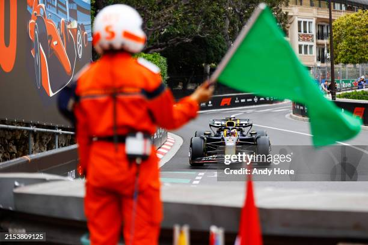
Pista liberada. Indica início ou retomada da corrida.
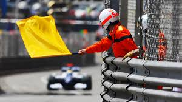
Perigo na pista. Proibido ultrapassar.
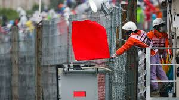
Corrida interrompida por condições perigosas.
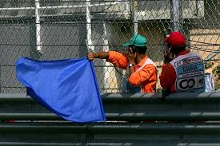
Informar retardatarios que o lider está proximo.
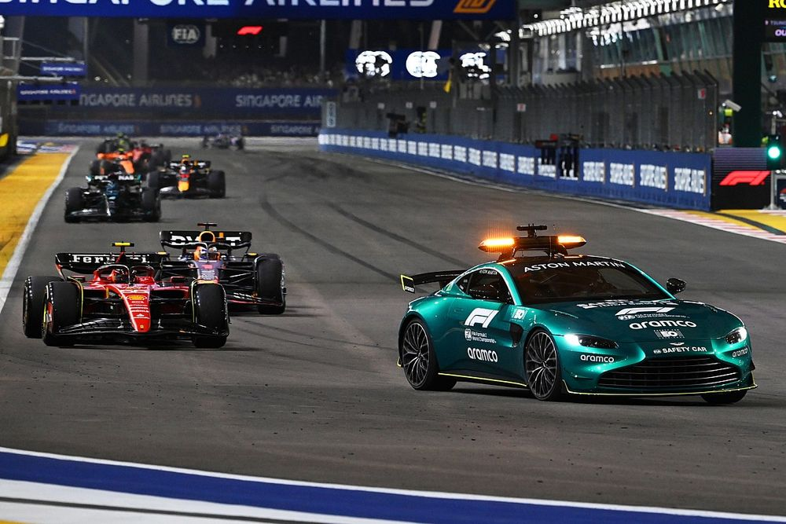
Entra quando há perigo na pista...
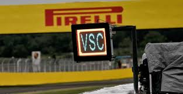
Redução obrigatória de velocidade...
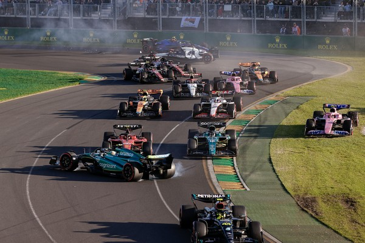
Reinício da corrida...
Tempo adicionado no final da corrida ou pago no pit stop. Usado em Ultrapassagens ilegais ou batidas
Piloto deve passar pelo pit lane sem parar. E usada quando o piloto comete uma infração grave,como queimar a largada ou ignorar bandeira amarela.
Piloto para no box por 10 segundos. Usada quando o piloto causa um acidente perigoso na corrida
Piloto perde posicões no grid de largada. Aplicada quando o piloto troca peças da unidade de potencia alem do limite ou atrapalha outro piloto na classificação
Piloto é desclassificado da corrida ou qualy por quebrar regras. Usada quando o piloto ou carro não cumpre as regras